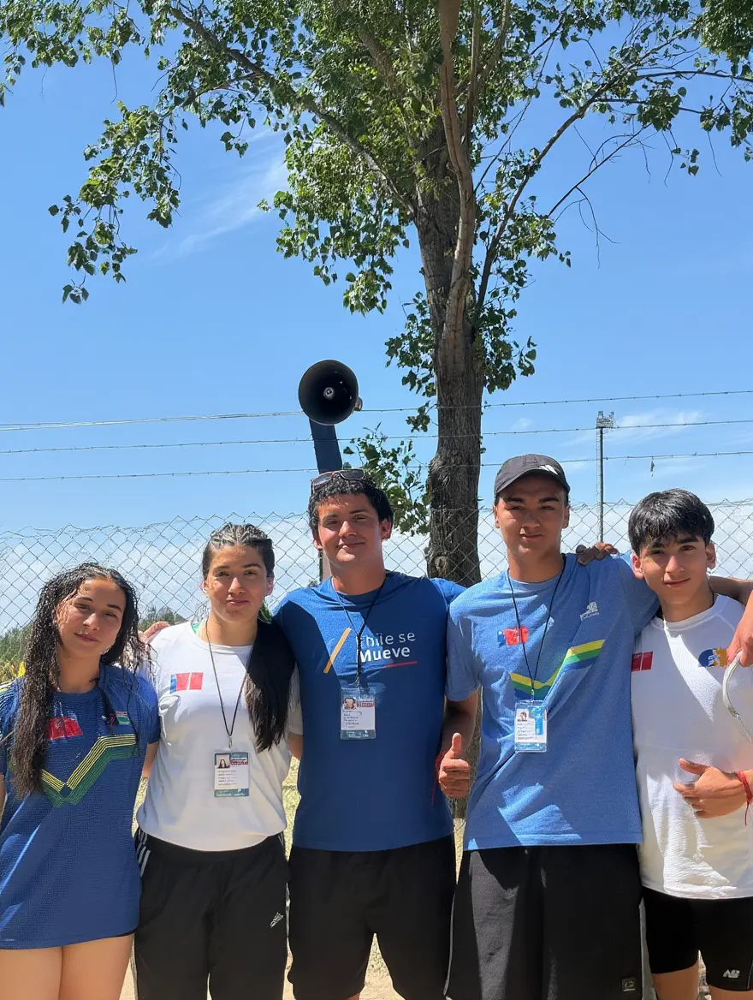
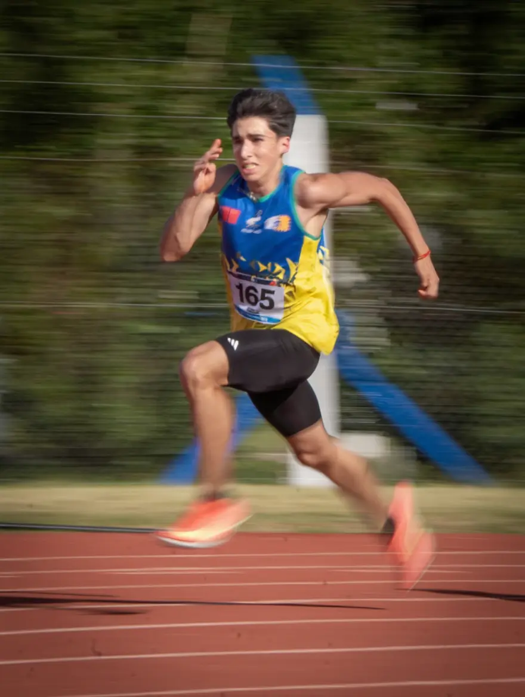

Orgullo Binacional: El CAF presente en los Juegos de la Araucanía
Noviembre, 2025Queremos felicitar y agradecer profundamente a nuestros atletas que cruzaron la cordillera para participar en los Juegos Binacionales de la Araucanía, celebrados en la Provincia de Chubut, Argentina. Esta cita, considerada el evento deportivo más importante del sur chileno-argentino, contó con la destacada presencia de nuestros representantes.

La delegación del club estuvo integrada por Sofía Araya, Florencia Miranda, Jans Antillanca y Franco Sotelo, quienes bajo la guía técnica del profesor Nicolás Cañoles, compitieron al más alto nivel frente a las mejores selecciones de la Patagonia y el sur de Chile.
Con gran esfuerzo, disciplina y un compromiso inquebrantable, cada uno de ellos fue un ejemplo de superación en tierras trasandinas. Su participación no solo suma experiencia deportiva, sino que fortalece el espíritu de nuestro club, siendo un verdadero orgullo para toda nuestra comunidad deportiva.

Gracias, equipo, por su entrega total y por llevar tan lejos el nombre del Club Atlético CAF. ¡Felicidades por este gran hito!
Volver al inicio